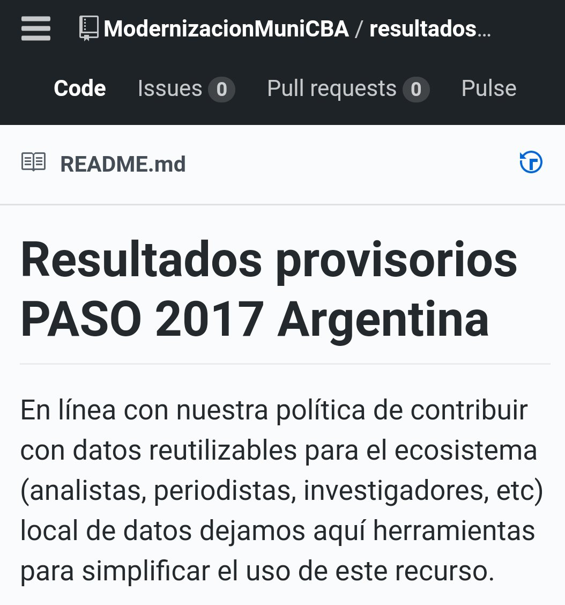
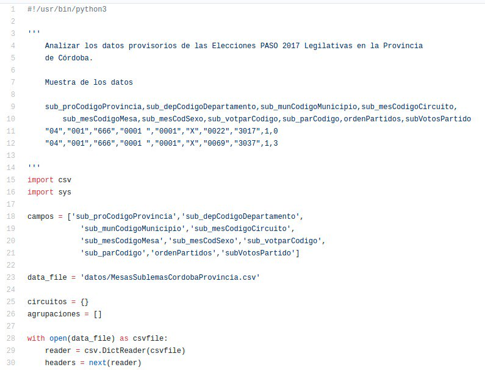
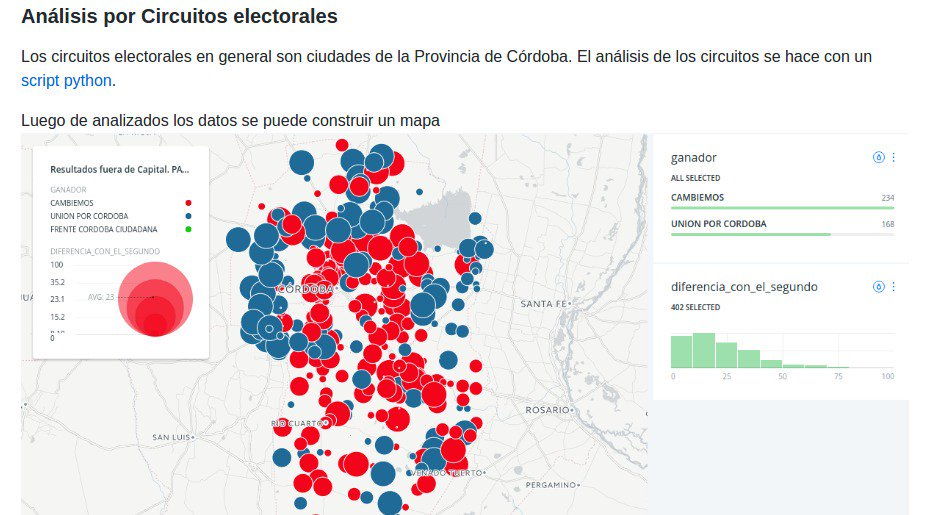
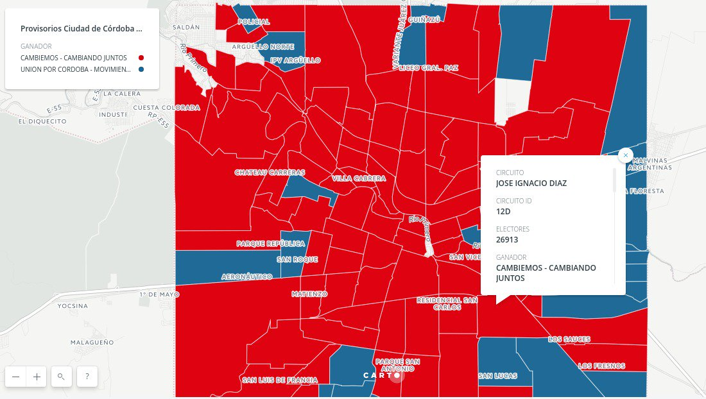
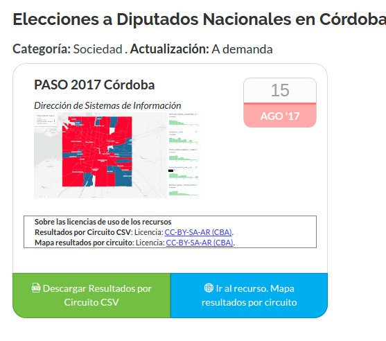

PASO 2017 — limpiando una base Access de 700 MB
Originalmente publicado como hilo en Twitter.
Desde la Dirección de Sistemas de Información de la Municipalidad de Córdoba tomamos la base de datos de resultados provisorios de las PASO (un Access de 700 MB) y limpiamos los datos para Córdoba.
https://github.com/ModernizacionMuniCBA/resultados-provisorios-PASO-2017-AR/blob/master/README.md



Los datos provisorios de los circuitos provinciales PASO 2017 se pueden ver acá:

Los resultados provisorios de las PASO 2017 para Córdoba Capital pueden verse acá:


Comentarios
Comments powered by Disqus